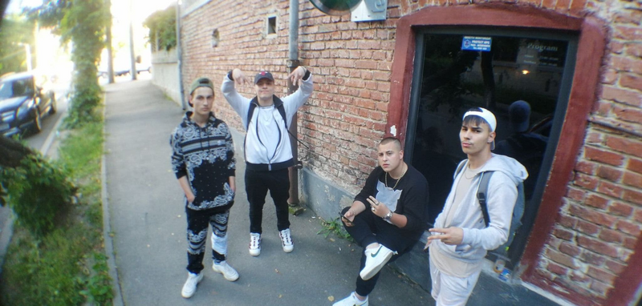
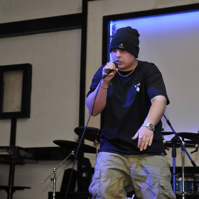
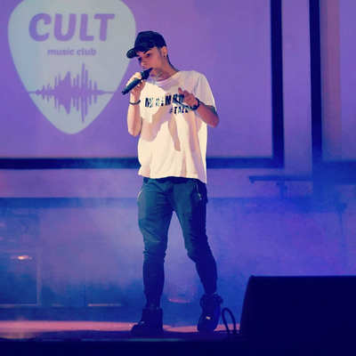

MAXIMUM BKS & CV9Una din trupele de top al rapului din Romania Fondata in anul 2013 |
Trupa a fost fondata initial in anul 2013, dar activitatea oficiala a inceput abia in anul 2017 cu piesa de debut BTJC, piesa care nu mai este disponibila in prezent pe canalul oficial al trupei datorita mix masterului inginerului de sunet Duzy.
Piesele de inceput, atat ale trupei, cat si solo-urile membrilor erau inregistrate si mixate la studioul lui Duzy: "Tomorrow Records".
In toamna anului 2017 a fost fondata casa de discuri "BKS Records" de catre H0bbit.
Apoi, din 2017 pana in 2018 au urmat diverse single-uri Maximum, printre care amintim piese precum "Amigo"; "Planul"; "Geoana" si "Flancuri".
In toamna anului 2018 a sosit prima colaborare a trupei, fiind de asemenea si primul videoclip, este vorba de single-ul Conturi in colaborare cu Alfa Mass Cool.
In anul 2019 a fost lansat albumul de debut al trupei: Fara Dop produs in mare parte de G7, dar si de Honja, JoL si 4Sync.
Anul 2020 a reprezentat o schimbare majora, membrul JoL a devenit producatorul oficial al trupei, in aceasta formula incepandu-se lucrul la urmatorul material:"Cargobull".
|  |
|   |